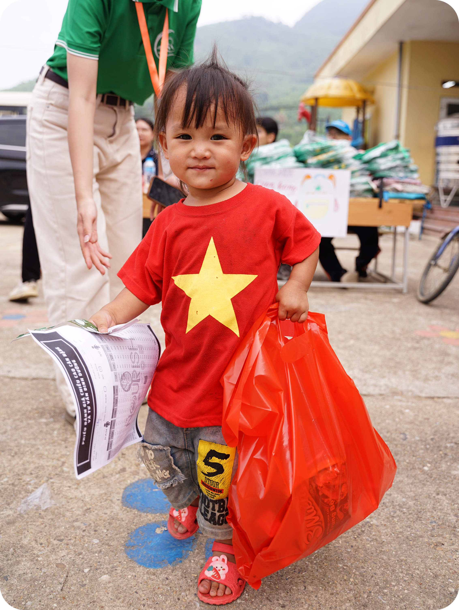

Our Story
In the highlands, many children face nutritional gaps despite the best efforts of their families and teachers. Therefore, we strive to combine growth measurements, WHO growth standards and locally available ingredients to recommend meals suited to children in each nutritional group, then connect donors so those meals can reach the children.
